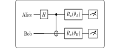

<!DOCTYPE html>
<html xmlns="http://www.w3.org/1999/xhtml">
<head>
  <meta charset="utf-8" />
  <meta name="generator" content="pandoc 3.10.2" />
  <meta name="viewport" content="width=device-width, initial-scale=1.0, user-scalable=yes" />
  <meta name="author" content="QuoNic" />
  <title>e91</title>
  <style>
    /* Default styles provided by pandoc.
    ** See https://pandoc.org/MANUAL.html#variables-for-html for config info.
    */
    html {
      color: #1a1a1a;
      background-color: #fdfdfd;
    }
    body {
      margin: 0 auto;
      max-width: 36em;
      padding-left: 50px;
      padding-right: 50px;
      padding-top: 50px;
      padding-bottom: 50px;
      hyphens: auto;
      overflow-wrap: break-word;
      text-rendering: optimizeLegibility;
      font-kerning: normal;
    }
    @media (max-width: 600px) {
      body {
        font-size: 0.9em;
        padding: 12px;
      }
      h1 {
        font-size: 1.8em;
      }
    }
    @media print {
      html {
        background-color: white;
      }
      body {
        background-color: transparent;
        color: black;
      }
      p, h2, h3 {
        orphans: 3;
        widows: 3;
      }
      h2, h3, h4 {
        page-break-after: avoid;
      }
    }
    p {
      margin: 1em 0;
    }
    a {
      color: #1a1a1a;
    }
    a:visited {
      color: #1a1a1a;
    }
    img {
      max-width: 100%;
    }
    svg {
      height: auto;
      max-width: 100%;
    }
    h1, h2, h3, h4, h5, h6 {
      margin-top: 1.4em;
    }
    h5, h6 {
      font-size: 1em;
      font-style: italic;
    }
    h6 {
      font-weight: normal;
    }
    ol, ul {
      padding-left: 1.7em;
      margin-top: 1em;
    }
    li > ol, li > ul {
      margin-top: 0;
    }
    blockquote {
      margin: 1em 0 1em 1.7em;
      padding-left: 1em;
      border-left: 2px solid #e6e6e6;
      color: #606060;
    }
    code {
      white-space: pre-wrap;
      font-family: Menlo, Monaco, Consolas, 'Lucida Console', monospace;
      font-size: 85%;
      margin: 0;
      hyphens: manual;
    }
    pre {
      margin: 1em 0;
      overflow: auto;
    }
    pre code {
      padding: 0;
      overflow: visible;
      overflow-wrap: normal;
    }
    .sourceCode {
     background-color: transparent;
     overflow: visible;
    }
    hr {
      border: none;
      border-top: 1px solid #1a1a1a;
      height: 1px;
      margin: 1em 0;
    }
    table {
      margin: 1em 0;
      border-collapse: collapse;
      width: 100%;
      overflow-x: auto;
      display: block;
      font-variant-numeric: lining-nums tabular-nums;
    }
    table caption {
      margin-bottom: 0.75em;
    }
    tbody {
      margin-top: 0.5em;
      border-top: 1px solid #1a1a1a;
      border-bottom: 1px solid #1a1a1a;
    }
    th {
      border-top: 1px solid #1a1a1a;
      padding: 0.25em 0.5em 0.25em 0.5em;
    }
    td {
      padding: 0.125em 0.5em 0.25em 0.5em;
    }
    header {
      margin-bottom: 4em;
      text-align: center;
    }
    #TOC li {
      list-style: none;
    }
    #TOC ul {
      padding-left: 1.3em;
    }
    #TOC > ul {
      padding-left: 0;
    }
    #TOC a:not(:hover) {
      text-decoration: none;
    }
    span.smallcaps{font-variant: small-caps;}
    div.columns{display: flex; gap: 1.5em;}
    div.column{flex: auto;}
    @media screen {
    div.columns{gap: min(4vw, 1.5em);}
    div.column{overflow-x: auto;}
    }
    div.hanging-indent{margin-left: 1.5em; text-indent: -1.5em;}
    /* The extra [class] is a hack that increases specificity enough to
       override a similar rule in reveal.js */
    ul.task-list[class]{list-style: none;}
    ul.task-list li input[type="checkbox"] {
      font-size: inherit;
      width: 0.8em;
      margin: 0 0.8em 0.2em -1.6em;
      vertical-align: middle;
    }
  </style>
  <script defer="" src="" type="text/javascript"></script>
</head>
<body>
<header id="title-block-header">
<h1 class="title">e91</h1>
<p class="author">QuoNic</p>
</header>
<div class="center">
<p><strong>Communication / 通信</strong> | 难度：高级 | 预计时间：20
分钟</p>
</div>
<h1 id="为什么需要">为什么需要？</h1>
<p>E91 是基于纠缠的量子密钥分发协议，比 BB84 更安全。</p>
<h2 id="经典局限">经典局限</h2>
<p>̱</p>
<ul>
<li><p>BB84 需要可信的量子源</p></li>
<li><p>BB84 无法检测中间人攻击</p></li>
</ul>
<h2 id="量子优势">量子优势</h2>
<p>̱</p>
<ul>
<li><p>E91 使用纠缠态，不需要可信量子源</p></li>
<li><p>可以通过 Bell 不等式检测窃听</p></li>
<li><p>提供无条件安全性</p></li>
</ul>
<h2 id="实际应用">实际应用</h2>
<p>̱</p>
<ul>
<li><p>量子密钥分发网络</p></li>
<li><p>量子安全通信</p></li>
<li><p>量子互联网</p></li>
</ul>
<h1 id="快速上手">快速上手</h1>
<pre style="python"><code>from quonic.algorithms import e91

# Run E91 protocol
result = e91(n_bits=100, noise=0.0)
print(f&quot;Shared key: {result.key}&quot;)
print(f&quot;Bell violation: {result.bell_violation}&quot;)</code></pre>
<p><strong>预期输出</strong>：</p>
<pre><code>Shared key: 01101001...
Bell violation: 2.828</code></pre>
<h1 id="原理详解">原理详解</h1>
<h2 id="电路图">电路图</h2>
<div class="center">
<p></p>
</div>
<h2 id="数学推导">数学推导</h2>
<p>E91 协议使用 Bell 态： <span class="math display">\[\begin{equation}
|\Phi^+\rangle = \frac{|00\rangle + |11\rangle}{\sqrt{2}}
\end{equation}\]</span></p>
<p><strong>协议步骤</strong>：</p>
<ol>
<li><p>源产生 Bell 对，分发给 Alice 和 Bob</p></li>
<li><p>Alice 和 Bob 随机选择测量基</p></li>
<li><p>公开比较测量基</p></li>
<li><p>保留基相同的比特作为密钥</p></li>
<li><p>用 Bell 不等式检测窃听</p></li>
</ol>
<p><strong>Bell 不等式</strong>： <span
class="math display">\[\begin{equation}
S = |E(a,b) - E(a,b&#39;) + E(a&#39;,b) + E(a&#39;,b&#39;)| \leq 2
\end{equation}\]</span></p>
<p>量子力学预测 <span class="math inline">\(S = 2\sqrt{2} \approx
2.828\)</span>。</p>
<h2 id="几何解释">几何解释</h2>
<p>E91 利用纠缠的非局域性，通过 Bell
不等式验证量子关联，从而检测窃听。</p>
<h1 id="代码详解">代码详解</h1>
<pre style="python"><code>from quonic.algorithms import e91

# e91(n_bits, noise)
# n_bits: number of bits to generate
# noise: channel noise rate
result = e91(n_bits=100, noise=0.0)

# result.key: shared secret key
# result.bell_violation: Bell inequality violation
# result.error_rate: quantum bit error rate
print(f&quot;Key: {result.key}&quot;)
print(f&quot;Bell violation: {result.bell_violation}&quot;)</code></pre>
<h1 id="进阶用法">进阶用法</h1>
<h2 id="场景-1带噪声的-e91">场景 1：带噪声的 E91</h2>
<pre style="python"><code># E91 with noise
result = e91(n_bits=100, noise=0.05)
print(f&quot;Bell violation: {result.bell_violation}&quot;)
# If violation &lt; 2, channel may be compromised</code></pre>
<h2 id="场景-2窃听检测">场景 2：窃听检测</h2>
<pre style="python"><code># Eavesdropping detection
result = e91(n_bits=100, noise=0.0)
if result.bell_violation &gt; 2:
    print(&quot;Channel is secure&quot;)
else:
    print(&quot;Eavesdropper detected!&quot;)</code></pre>
<h1 id="适用场景">适用场景</h1>
<h2 id="量子密钥分发网络">量子密钥分发网络</h2>
<p>E91 可以用于构建量子密钥分发网络。</p>
<h2 id="量子安全通信">量子安全通信</h2>
<p>E91 提供无条件安全性，适用于高安全需求的通信。</p>
<h1 id="常见问题">常见问题</h1>
<h2 id="e91-和-bb84-有什么区别">E91 和 BB84 有什么区别？</h2>
<p>E91 使用纠缠态，BB84 使用单光子。E91 可以通过 Bell
不等式检测窃听。</p>
<h2 id="e91-的安全性如何">E91 的安全性如何？</h2>
<p>E91 提供无条件安全性，基于量子力学的基本原理。</p>
<h1 id="学习路径">学习路径</h1>
<h2 id="前置知识">前置知识</h2>
<p>̱</p>
<ul>
<li><p>Bell 态</p></li>
<li><p>Bell 不等式</p></li>
<li><p>量子测量</p></li>
</ul>
<h2 id="继续学习">继续学习</h2>
<p>̱</p>
<ul>
<li><p>量子中继</p></li>
<li><p>量子互联网</p></li>
<li><p>量子密码学</p></li>
</ul>
<h1 id="完整示例代码">完整示例代码</h1>
<h2 id="示例-1基本-e91">示例 1：基本 E91</h2>
<pre style="python"><code>from quonic.algorithms import e91

result = e91(n_bits=100, noise=0.0)
print(f&quot;Key: {result.key}&quot;)</code></pre>
<p> </p>
<h1 id="下载">下载</h1>
<p></p>
<ul>
<li><p>(https://github.com/ChrisLee0721/QuoNic/blob/main/examples/e91/e91.py)</p></li>
</ul>
</body>
</html>
